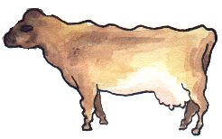

Au Portinfé
Mêcredi au sé.
Moussieu l'Editeu,
Hier au sé la Merrianne, tch'y v'nait d'ruminé pour un bouon quart-d'heuthe, après avé liut la gâzette, me dis comme chonna: "Ch'est d'main l'anniversaire de la Libéthâtion, Ph'lip. Tchèsque j'allons faithe?"
"J'allons resté siez-nous, ma vieille," j'l'y dit, "et j'allons nos r'pôsé et pensé un mio à chais chinq tristes années, et ès siens tchy ne r'vintes pas. Pour hardi, tu sais, Merrienne, d'main ne s'sa pas un jour de rêjouissance, car y'a des choses que nou n'roublie pas."
"Ch'est bein vrai," ou dit. "Ach'teu, tchèsqu'y y'a en Ville?"
"Y n'y'a pas le sèrvice usuél dans la Vieille Eglyise," j'l'y dit. "L's'Etats décidîtes que chonna n'tait pas nécéssaithe, et pourtant y'avait pus d'un membre d'Campagne tch'y n'approuvait pas de ch't'action-là. Dans l'arlevée y'a du football à Springfield, et des bidets à la Preumié Tour. Si fait bé, ch'est seux qu'y'étha du monde."
"Y'en étha tout-plien étout dans l's'aubérges," ou s'fit sèquement. "Et y'étha bein des travailleux tch'y s'saient pûs contents s'être à lûs d'jobbe, si lûs jour s'est pas péyi. Mais faut laissé chonna. Ne v'là les shows prèsque finis; dis-mé ouèsque tu'as veu tchiquechose de bé."
"Eh bein, Merrienne," j'l'y dit, "y faut adméttre que j'ai 'tait un mio d's'appointé, car, à prendre yun dans l'autre, y n'y'avait pas la qualité des autres années, sinon au show d'la Ville et Mardi, à Saint-Jean et Saint-Louothains. Ch'n'est pas pour dithe que n'y'avait pas d'bouonnes bêtes ichin et là, mais à Saint-Martin, par éxemple et même pûs au show des Trais Pâraisses, n'ou viyait pas grand'chose d'extra. J'éthais creu que pour lûs centenaire, nos férmiers éthaient fait un effort spécial, mais nouffé. Imagine-té, par exemplye que la famille des Le Ruez n'avait prèsque rain, et ch'tait prèsque la même chose à Saint-Martin, ouèsque les Richardson's n'avaient pas lûs entrées d'couôtume."
"Y n'faut pas s'en êtonné," ou dit, "car des quatre garçons, y n'en reste que yun ou deux dans la pâraisse. Mais n'te gêne pas: nou r'vêrra les Le Ruez et les Richardsons au mais d'Octobre. Mais chein que j'veur savé Ph'lip, tu'as tait à touos les shows: ouèsque tu'as veu la miyeu vaque?"
"Ah, damme, Merrienne," j'l'y dit, "tu m'pôse une tchéstchon-là. Comme dîsait le bouonhomme John Le Ruez, y faut les vais ensemblyes. Je n'crais pas qu'la vaque tchi fit l'champion ichin est tout-à-fait bouonne asséz mais la vaque au Sieur Hickey, tchi remportit tout au Bouôlé pouôrrait l'faithe si ou pathait aussi bein comme à la Trin'té. Y'en a tch'y n'l'aiment pas pûs qu'chonna, mais je crais tch'y s'saient bein contents d'l'avé dans lûs êtablye. La veuve Mouothant en a yunne que les Juges éthont à r'gardé, et y'en avait un couplye à Saint-Jean et Saint-Louothains tchi valaient la peine de vais. Le Sieur de St. Paër fit l'championnat, et sans doute le méthitait, mais sa tête n'est pas yun d'ses miyeu points. Ach'teu, à Grouville, le Sieur Bertram r'montrit s vaque tch'avait fait l'championnat en Ville y'a deux ans. Ch'est une longue, forte vaque, avec un raide bouon piéchot, mais ou perd dans sa tête, et quant à mé j'aime une belle tête jêrriaise. Ch'est pour les Juges à décidé, et ch'est seux et cértain tch'y trouv'thont des critiques le tout su ring. S'ils ont dans l'idée tch'y pouôrront pièthe à tout-l'monde, y peut l'oublié."
"Et don, tu n'peux pas m'dithe la sienne que tu'aime le mûs de toutes chais-là?"
"Nan," j'l'y dit, "mais j'ai m'n'idée fixe quand-même."
Ph'lip
Les Chroniques de Jersey 11/5/1957
Viyiz étout: